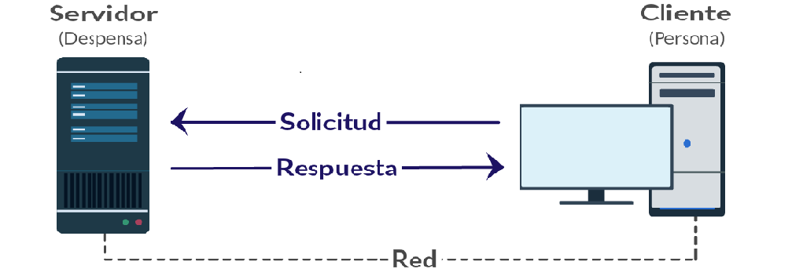

Servidor local asincronico con sistema cliente servidor

En esta aplicación web se desea mostrar el funcionamiento de un servidor web asincrónico
En el siguiente botón se puede ingresar al "formulario"
para hacer la demostración de servicios rest sin el uso de frameworks.